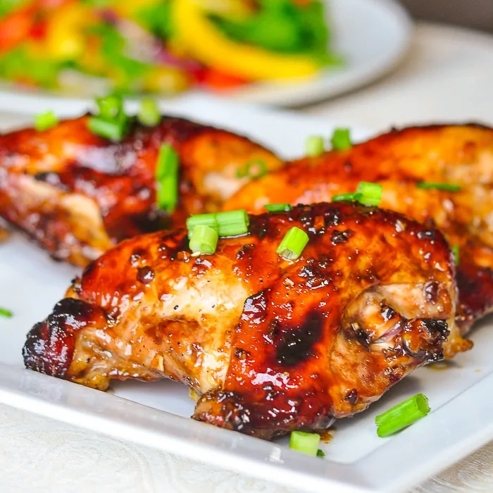

Miami Breeze

Description
Name comes from a inside joke between I and my friends, first time I made this dish my friend said
it taste like a dish that he ate when he was at Miami. This dish is mainly a chicken seasoned with
honey and some spices
Ingredients
For ingredients I can't give specific measure because I cook this by sense of proportion
- Chicken
- Olive oil
- Honey
- Mustard
- Thyme
- Chili pepper
- Cumin
- Salt or Soy sauce
Steps
- Prepare chicken as you like (Be careful that it is not thick so that it does not become hard to cook)
- Mix olive oil, honey, soy sauce (or salt) and spices in a mixing bowl
- Add chicken to the bowl and give it a nice mixing
- Wrap the bowl and put it in the fridge for at least 30 mins, up to 4-6 hours
- Heat a pan on high heat then add the chicken to pan and cook (You can add butter if you like)